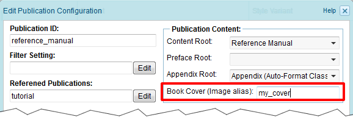
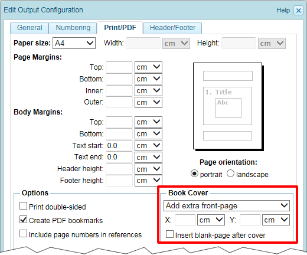

1.13.2. Creating a cover-page
Some export formats allow the output of an image as front-cover. Currently this is supported for the PDF and eBook output. To define an image as cover-page, open the publication configuration and enter the alias name of the image in the field "Book Cover":

Figure 1.13.1. Defining the cover image
For eBook output, this is the only required setting. For PDF output, further output options are available in the
PDF output configuration:
PDF output configuration:

Figure 1.13.2. Cover settings for PDF output
One option is to add an extra front-page to the PDF publication. By default the cover-image is placed in the middle of the front-page. Though, by entering a value in the "X" and/or "Y" field, the cover-image can be positioned horizontally and/or vertically. Furthermore, for double-sided output an empty page can be inserted after the cover-page.
Instead of adding an extra front-page, it is also possible to output the cover-image as background-image on the title-page. The text on the title-page is then placed on a layer in front of the cover-image. To position the text on the cover-page, you can use the pre-defined block-style "coverpage" and define a padding (see Section 2.4.2, “Pre-defined styles”).
Furthermore, the block-style "coverpage" can be used to set the background-color of the cover-page. This may be useful in case the cover-image does not fill the complete page.
Notes:
- Image variants can be used to output different cover-images depending on filter settings. See Section 1.10.2, “Node variants” for details.
- Two different cover-images can be defined depending on whether the publication is exported as draft or released publication. See Section 2.6.1.1, “Creating a publication configuration” for details.
- Though static HTML and Web-Help export does not support the output of a cover-page, the custom title-page functionality can be used to insert an image on the title-page.